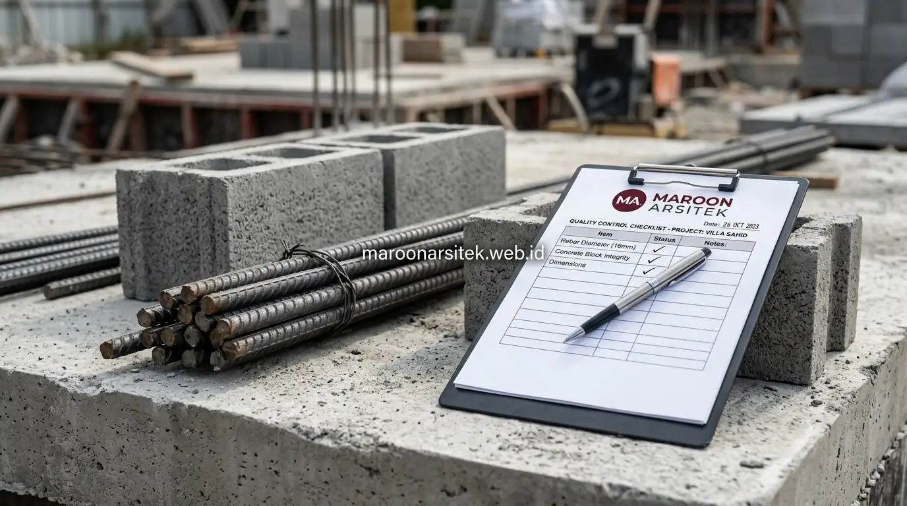

Kekhawatiran terbesar bagi pemilik lahan yang ingin membangun rumah dari nol bukanlah sekadar tampilan fasad luar, melainkan kekuatan tersembunyi pada struktur beton bertulang dan pondasi bawah tanah. Penurunan pondasi yang tidak merata (*differential settlement*) dan keretakan dinding umumnya dipicu oleh pengerjaan tanpa standar operasional yang baku. Menggunakan layanan jasa kontraktor rumah profesional dari Maroon Arsitek memberikan jaminan kepatuhan teknis, material bersertifikasi, dan pengawasan ketat sejak peletakan batu pertama.
Jasa Bangun Rumah dari Nol dengan SOP Material Terstandarisasi
Penerapan Standard Operating Procedure (SOP) material memastikan kualitas komponen bangunan tetap terjaga dari awal hingga akhir proyek:
- Besi Tulangan Bersertifikat SNI: Menggunakan besi ulir (*deformed bar*) dengan diameter dan jarak sengkang yang presisi sesuai gambar struktur DED, bukan besi banci yang rentan melengkung.
- Agregat Pasir dan Kerikil Bebas Lumpur: Pasir dicuci untuk meminimalkan kadar lumpur di bawah 5%, memastikan daya rekat pasta semen bekerja maksimal pada campuran beton.
- Penyimpanan Material Kedap Air: Sak semen disimpan di atas palet kayu terangkat dan ditutup terpal guna mencegah kelembapan tanah yang memicu pengerasan dini sebelum dicampur.
Pondasi Rumah Anti Retak melalui Perhitungan Struktur Tepat
Pondasi yang kokoh dirancang berdasarkan penyelidikan karakteristik tanah di lokasi lahan:
- Analisis Karakteristik Tanah: Menentukan kedalaman tanah keras untuk memilih jenis pondasi yang tepat, seperti pondasi batu kali menerus dipadu footplat cakar ayam untuk rumah 2 lantai, atau *bored pile/strauss pile* untuk tanah berdaya dukung lunak.
- Balok Sloof Pengikat: Pemasangan balok sloof beton bertulang di atas pondasi mengikat seluruh kolom secara monolit, meratakan beban bangunan, dan mencegah pergeseran akibat getaran tanah.
- Kedalaman Galian Aman: Memperhitungkan batas muka air tanah agar pondasi tidak mengalami pengikisan hidrolik dari bawah.

Pemilihan Beton dan Besi untuk Bangun Rumah Tahan Lama
Ketahanan struktur rumah bertingkat ditentukan oleh empat faktor utama dalam proses pembetonan:
- Kesesuaian Mutu Beton: Menggunakan mutu beton minimal K-225 hingga K-300 untuk elemen struktural utama seperti kolom praktis, balok gantung, dan plat dak beton lantai dua.
- Penggunaan Concrete Vibrator: Pemadatan mekanis saat pengecoran wajib dilakukan untuk menghilangkan gelembung udara, mencegah keropos sarang lebah (*honeycomb*) di dalam beton.
- Selimut Beton (Concrete Cover): Memasang tahu beton (*concrete spacer*) agar besi tulangan terlindung sempurna dari udara luar dan bebas dari risiko karat korosi jangka panjang.
- Perawatan Beton (Curing): Melakukan penyiraman air secara berkala selama 7–14 hari pertama agar reaksi hidrasi semen sempurna dan beton mencapai kuat tekan maksimal.
Pengawasan Proyek Bangun Rumah di Setiap Tahapan Konstruksi
Setiap tahapan kritis dipantau langsung oleh Site Supervisor dan Project Manager Maroon Arsitek:
- Pemeriksaan elevasi dan ketegakan bekisting kolom menggunakan waterpass dan theodolite sebelum pengecoran diizinkan.
- Laporan progres mingguan (*Weekly Progress Report*) lengkap dengan dokumentasi foto dan kurva realisasi fisik dikirimkan berkala kepada pemilik rumah.
- Transparansi penuh memungkinkan klien yang sibuk tetap memantau kualitas bangunan tanpa harus hadir di lokasi setiap hari.
Garansi Struktur dan Kualitas Bangun Rumah dari Nol
Kepastian investasi hunian Anda dilindungi oleh jaminan garansi resmi tertulis:
- Masa Retensi Pemeliharaan: Perlindungan perbaikan gratis untuk instalasi sanitasi, kebocoran pipa, kelistrikan, dan cat dinding pasca serah terima kunci.
- Sertifikat Garansi Struktur: Komitmen hukum atas kekokohan pondasi dan kolom utama, memberikan ketenangan pikiran (*peace of mind*) seumur hidup bagi keluarga Anda.